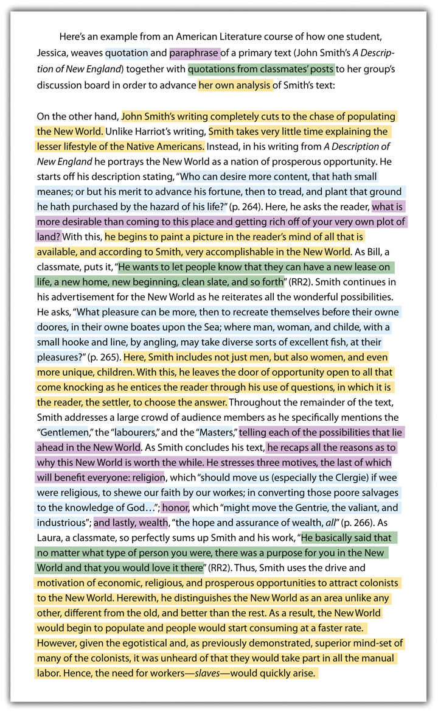

11.2 Using Strategies for Writing College Essays
Learning Objectives
- Use time-management skills to lay out a work plan for major writing assignments.
- Develop strategies for reading college assignments strategically.
As a college student, you must take complete responsibility for your writing assignments. Your professors are assessing your ability to think for yourself, so they’re less likely to give you ready-made templates on how to write a given essay. This lack of clarity will be unsettling, but it’s part of an important growth process. By using strategies, you can systematically approach each assignment and gather the information you need for your writing requirements.
Plotting a Course for Your Writing Project
Once you know you have an upcoming writing project, you have some basic decisions to make. The following list of questions will lead you to make some preliminary choices for your writing project. (To learn more, see Chapter 5 "Planning", Section 5.3 "Developing Your Purposes for Writing".)
-
What am I trying to accomplish? Writing can serve a variety of purposesA writer’s reason for writing (e.g., to inform, to entertain)., such as to explain, to persuade, to describe, to entertain, or to compare. Your assignment might specifically dictate the purpose of the writing project. Or the assignment might simply indicate, for example, that you are to show you understand a topic. In such a situation, you would then be free to choose a writing purpose through which you could demonstrate your understanding.
-
Who do I want my readers to be? Traditionally the audienceThe people to whom a piece of communication is directed. for a college student’s paper has been the instructor, but technology is rapidly changing that. Many instructors actively make use of the web’s collaborative opportunities. Your fellow students (or even people outside the class) may now be your audience, and this will change how you approach your assignment. Even if your instructor is the only person who will see your finished product, you have the right (and even the responsibility) to identify an ideal reader or readership for your work. Whoever your audience is, take care to avoid writing too far above or too far beneath their knowledge or interest level.
-
What am I writing about? Your topicThe content area of a piece of communication. might be set by your instructor. If so, make sure you know if you have the option of writing about different angles of the topic. If the topic is not preset, choose a topic in which you will be happy to immerse yourself.
-
What’s my position on this topic? Analyze your ideas and opinions before you start the writing project, especially if the assignment calls for you to take a position. Leave room for new ideas and changes in your opinion as you research and learn about the topic. Keep in mind that taking a stand is important in your efforts to write a paper that is truly yours rather than a compilation of others’ ideas and opinions, but the stand you take should evolve from encounters with the opinions of others. Monitor your position as you write your first draft, and attend to how it changes over the course of your writing and reading. If your purpose is to compare ideas and opinions on a given topic, clarifying your opinion may not be so critical, but remember that you are still using an interpretive point of view even when you are “merely” summarizing or analyzing data.
-
How long does this piece of writing need to be? How much depth should I go into? Many assignments have a predetermined range of page numbers, which somewhat dictates the depth of the topic. If no guidance is provided regarding length, it will be up to you to determine the scope of the writing project. Discussions with other students or your instructor might be helpful in making this determination.
-
How should I format this piece of writing? In today’s digital world, you have several equally professional options for completing and presenting your writing assignments. Unless your professor dictates a specific method for awareness and learning purposes, you will probably be free to make these format choices. Even your choice of font can be significant.
-
How or where will I publish this piece of writing? You are “publishing” every time you place an essay on a course management system or class-wide wikiAn interactive, shared website featuring content that can be edited by many users. or blogShort for weblog, a regularly posted entry on the web, and usually managed by a single person or a group of like-minded writers., or even when you present an essay orally. More likely than not, if your writing means something to you, you will want to share it with others beyond your instructor in some manner. Knowing how you will publish your work will affect some of the choices you make during the writing process.
-
How should my writing look beyond questions of format and font? College essays used to be completely devoid of visuals. Nowadays, given the ease of including them, an essay that does not include visuals might be considered weak. On the other hand, you do not want to include a visual just for the sake of having one. Every visual must be carefully chosen for its value-adding capacity. (To learn more about visuals, see Chapter 9 "Designing", Section 9.3 "Incorporating Images, Charts, and Graphs".)
Planning the basics for your essay ahead of time will help assure proper organization for both the process and the product. It is almost a certainty that an unorganized process will lead to an unorganized product.
Reading Assignments Closely and Critically
A close and careful reading of any given writing assignment will help you sort out the ideas you want to develop in your writing assignment and make sense of how any assigned readings fit with the required writing.
Use the following strategies to make the most of every writing assignment you receive:
- Look for key words, especially verbs such as analyze, summarize, evaluate, or argue, in the assignment itself that will give clues to the genreA type of communication determined by its function with formal characteristics and conventions developed over time., structureThe form or organization of a piece of writing., and mediumThe means through which a message is transmitted. of writing required.
- Do some prewriting that establishes your base of knowledge and your initial opinions about the subject if the topic is predetermined. Make a list of ideas you will need to learn more about in order to complete the assignment.
- Develop a list of possible ideas you could pursue if the topic is more open. (For more about choosing a topic, see Chapter 5 "Planning", Section 5.1 "Choosing a Topic".)
Use the following strategies to help you make the most of readings that support the writing assignment:
- Make a note if you question something in any assigned reading related to the writing assignment.
- Preview each reading assignment by jotting down your existing opinions about the topic before reading. As you read, monitor whether your preconceived opinions prevent you from giving the text a fair reading. After finishing the text, check for changes in your opinions as result of your reading.
- Mark the locations of different opinions in your readings, so you can easily revisit them. (For more on how this works with research, see Chapter 7 "Researching", Section 7.8 "Creating an Annotated Bibliography".)
- Note the points in your readings that you consider most interesting and most useful. Consider sharing your thoughts on the text in class discussions.
- Note any inconsistencies or details in your readings with which you disagree. Plan to discuss these details with other students or your professor.
Above all, when questions or concerns arise as you apply these strategies, take them up with your professor directly, either in class or during office hours. Making contact with your professor by asking substantive questions about your reading and writing helps you stand out from the crowd and demonstrates that you are an engaged student.
Connecting Your Reading with Your Writing
College writing often requires the use of others’ opinions and ideas to support, compare, and ground your opinions. You read to understand others’ opinions; you write to express your opinions in the context of what you’ve read. Remember that your writing must be just that—yours. Take care to use others’ opinions and ideas only as support. Make sure your ideas create the core of your writing assignments. (For more on documentation, see Chapter 22 "Appendix B: A Guide to Research and Documentation", Section 22.5 "Developing a List of Sources".)

Sharing and Testing Your Thinking with Others
Discussion and debate are mainstays of a college education. Sharing and debating ideas with instructors and other students allows all involved to learn from each other and grow. You often enter into a discussion with your opinions and exit with a widened viewpoint. Although you can read an assignment and generate your understandings and opinions without speaking to another person, you would be limiting yourself by those actions. Instead it is in your best interest to share your opinions and listen to or read others’ opinions on a steady, ongoing basis.
In order to share your ideas and opinions in a scholarly way, you must properly prepare your knowledge bank. Reading widely and using the strategies laid out in the Section 11.2.3 "Connecting Your Reading with Your Writing" are excellent methods for developing that habit.
Make sure to maintain fluidity in your thoughts and opinions. Be prepared to make adjustments as you learn new ideas through discussions with others or through additional readings. You can discuss and debate in person or online, in real time or asynchronously. One advantage to written online discussions and debates is that you have an archived copy for later reference, so you don’t have to rely on memory. For this reason, some instructors choose to develop class sites for student collaboration, discussion, and debate.
Key Takeaways
- The assignments you receive from your instructors in college are as worthy of a close and careful reading as any other texts you are assigned to read. You can learn to employ certain strategies to get the most out of the assignments you are being asked to perform.
- Success in college and life depends on time- and project-management skills: being able to break large projects into smaller, manageable tasks and learning how to work independently and collaboratively.
Exercise
For every assignment you receive with an open topic, get into the habit of writing a journal or blog entry that answers the following four questions:
- What are some topics that interest you?
- What topics will fit within the time frame you have for the project?
- Of the possible topics, which have enough depth for the required paper?
- For which topics can you think of an angle about which you are passionate?